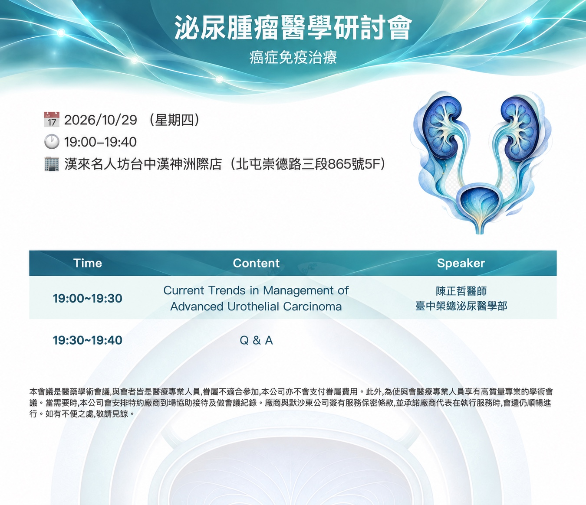
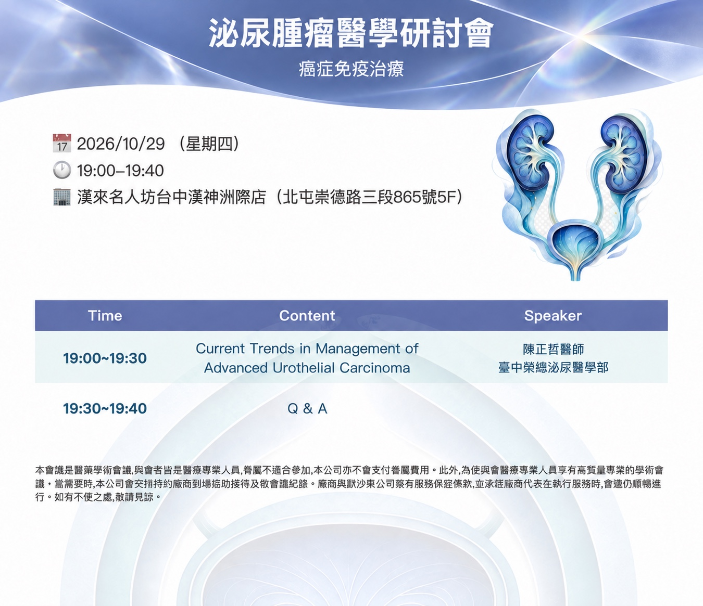
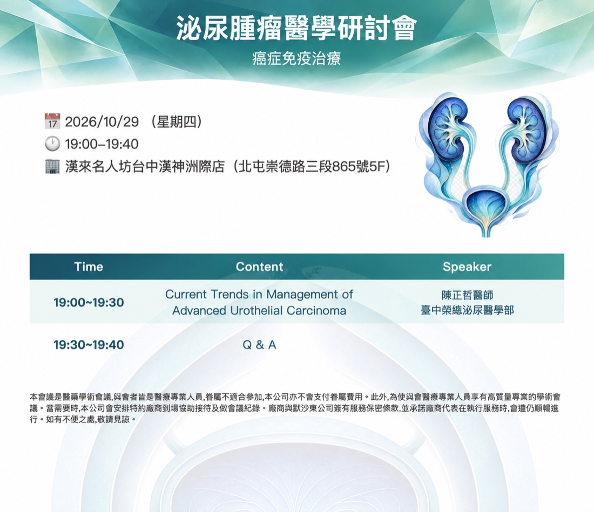
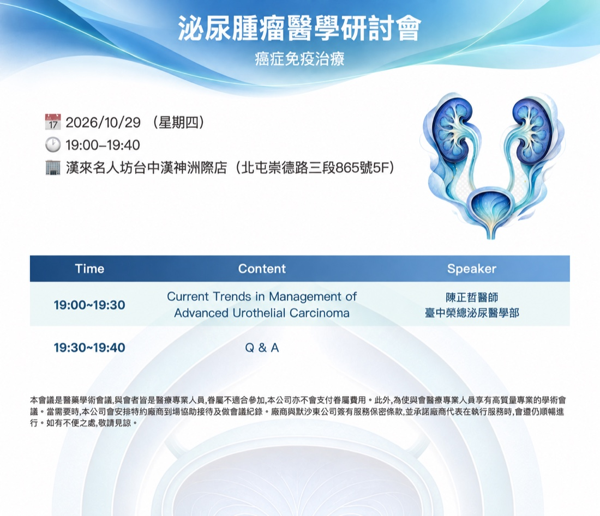

ImageGen complete design set · design only
四款完整設計｜全數核准
2026-09-14 四款設計已全數核准。01 聚焦訊號交織與能量傳遞，02 聚焦折射辨識與偏心焦域，03 保留有機晶面張力，04 保留偏心流場能量；腸癌同步採用 Clinical Cobalt。後續工程轉譯必須維持此頁的材質深度、平滑邊界與中央可讀留白。
01
免疫訊號｜光徑共振
preserved ID: soft-wave APPROVED · 已核准兩片不同方向與深度的透明光膜彼此穿行，三條亮度、曲率與起點各異的細光徑在其中傳遞；只有少量訊號點落在真正的交會位置。屋簷下緣以一個非對稱深灣和延遲上揚形成活力，不再是規律波浪。
不等勢光徑稀疏訊號點透明光膜非對稱深灣中央穩定

02
精準辨識｜折射焦域
preserved ID: arc-sweep APPROVED · 已核准兩個不等形、不同方向的半透明折射面從兩側接近，在外側三分之一形成安靜偏心焦域；細校準光線只輕觸焦域便消散。辨識感來自折射差與空間聚焦，而不是準星、同心圓或平行弧帶。
不等折射面偏心焦域單一校準線柔霧焦散非機械對稱

03
協同網絡｜有機晶面
preserved ID: layered-ribbon APPROVED · 已核准保留較完整的透明晶面張力。大、小晶面以不等角度與間距交錯，外側材質層次較強，標題中央則靠霧化色場維持可讀；下緣仍以柔順連續曲線過渡到白色資訊區。
大尺度晶面不等角度材質層次中心霧化柔順邊界

04
免疫級聯｜偏心流場
preserved ID: clean-diagonal APPROVED · 已核准保留多股寬幅光流帶來的動勢，但不採等距同心弧。左右流向、厚度與透光度刻意不同，細光絲從兩側牽動畫面，在中央標題區形成開放而非壓迫的留白。
寬幅流面左右不等勢光絲牽引冷色透光開放留白

腸癌新配色｜Clinical Cobalt
舊版橘棕、銅色與芥末色全部撤除。新的方向以深臨床鈷藍建立專業度，用矢車菊藍拉開層次，少量冷玉色只作活性提示；Agenda 標題列與重點文字同步。
#244F86
Deep cobalt
Deep cobalt
#5F8FC4
Cornflower
Cornflower
#76B8AE
Cool jade
Cool jade
#DCEAF4
Mist blue
Mist blue
#FFFFFF
White
White
TimeContentSpeaker
19:00–19:30癌症免疫治療新進展王醫師
核准完成：01「免疫訊號｜光徑共振」、02「精準辨識｜折射焦域」、03「協同網絡｜有機晶面」、04「免疫級聯｜偏心流場」與腸癌 Clinical Cobalt 已全數核准，正式進入產品實作。